Genel Matematik
1 - Başlangıç Bilgileri
3.1 - Mantığa Giriş
1.3.1 - Mantığın Alanı
Mantık bilinenlerden bilinmeyenlerin doğru olarak bulunması için gerekli yöntemleri inceleyen bir filosofi alanıdır.
Mantık, insanların aklında gelişen bir akıl yürütme yöntemidir. Akıl yürütme, insanların kendisine özgü, dışa karşı kapalı olarak yürütülen bir çalışma olduğundan başkaları tarafından bilinemez. İnsanlar, açıklamak istedikleri düşünceleri gündelik olarak kullandıkları dilleri ile açıklarlar. Bu nedenle, mantık, gündelik dil ile açıklanan bir akıl yürütme yöntemi olarak tanımlanır.
Gündelik dil ile açıklanan ve hiçbir formülasyon kısıtlaması ile sınırlandırılmamış olan mantık, en geniş ve en açıklayıcı mantıktır. Bunlara örnek olarak Parmenides, Zeno, Sokrates ve Platonun diyalektik sorgulamaları en belirgin örneklerdir. Formüle dayanmayan (informal) (bu sözcük aynı zamanda resmiyetten uzak olmak anlamında da kullanılır) mantık, en açıklayıcı, fakat en az sistematize olmuş mantıktır. Formel olmayan mantığın kuralları belirgin olmadığından, uygulamaları da belirli kurallara bağlanmamış, özel uygulamalar olmaktan ileri gidemez.
Mantığı sistematik hale getirmek için ilk çalışma Aristoles (M.Ö. 384 – 322) tarafından gerçekleştirilmeye çalışılmıştır. Kendisinden önce uygulanan informal (formule dayanmayan) mantığı inceleyen Aristotles, ilk olarak, önermelerin yerine harflerin kullanıldığı, formüle dayanan (formal) bir mantığı oluşturmaya çalışmıştır. Günümüzde uygulanan formal mantık, Aristoles’in çabalarının genişletilmiş halidir.
Mantığın önemli bir uygulama alanı olan matematikte uygulanacak mantığın, ifade enginliğine değil sistematik bir düzene gereksinmesi vardır. Matematik, bilinenlerden kesin ve tartışmasız bir yöntemle yeni bilgileri oluşturmayı amaçladığından, gündelik dil ile açıklananan kuralsız ve belirgin olmayan ifadeler ile anlatıma yatkın olan gündelik dilin, matematikte uygulanması gereken mantık için uygun olmadığı, Antik çağlarda Aristoteles (M.Ö. 384 – 322), modern çağlarda ise Leibniz (M.S. 1646 – 1716)’den beri farkedilmiştir. Bu konuda en son çaba harcayan “latino sine flexione” (Basitleştirilmiş Latince) ile Christiano Peano (1858-1932) olmuştur. Bu konuda hiçbiri başarılı olamamamıştır çünkü, insanlara konuştukları dilde başka bir dil öğretmek kolay değildir. Günümüzde, bu konuda İngilizce ile ilerleme sağlanmıştır. Çünkü, İngilizce -başlangıçta !- öğrenilmesi kolay bir dil olmaktadır.
Gündelik konuşma dillerinin yarattığı belirsizlik ve çok anlamlılık sorunlarının aşılabilmesi için, matematik için uygulanacak, gündelik konuşma diline en az gerek gösterecek özel bir dil olan, formüller aracılığı ile iletişim sağlayan, iletişim sistemleri oluşturulmaya çalışılmış ve bu sistemler ancak 20 inci yüzyılda geliştirilebilmiştir. Matematik için kullanılacak olan mantık siitemi, özel bir dildir. Bu dil açıklamalarını formüller aracılığı ile belirtecek, bu şekilde formal bir dil olarak, konuşma dilinin belirsizliklerinden arındırılabilecektir. Matematik mantık için oluşturulabilecek formal diller, konuşma dilinin bir çok öğesi kullanılmadan oluşturuldukları için, birer alt dil anlamındadır ve hiçbir zaman üst dilin açıklayıcılığına erişemeyeceklerdir. Buna rağmen matematiğin tanımlanması için uygulanacak mantık dilleri, sistematik ve düzenli olacaklardır.
Matematik için uygulanacak bir mantık sisteminin, gündelik dile dayanan, fakat gündelik dilin belirsizliklerinden ve birden çok anlama çekilebilecek ifadelerden arındırılmış özel bir alt dil olması gerekir. Bu alt dil, sadece formüllerden oluşacak formal bir dil olmalı ve hiçbir konuşma diline dayanmamalıdır. Bu şekilde, matematik mantık dilini oluşturacak formüller, her dilde okunabilecektir. Her dil gibi, matematik mantık dilinin bir dizilim (sentaks), bir de içerik (semantik) kuralları olacaktır. Dizilim kuralları, gramer kuralları olarak da belirtilir. Bu kurallar, dil içinde tanımlı öğelerden yararlanarak doğru (geçerli) formüller (iyi oluşmuş formüller) (wff= well formed formulas) oluşturulması için uygulanması gerekli kurallar olarak tanımlanır. Semantik ise, formüllerin değerlendirilme yöntemlerini belirler.
Mantıksal dillerde olması gereken genel özellikler,
Tutarlılık (Consistency) : Bir yöntemi açıklamak için oluşturulan bir formülden çıkacak olan sonucun, aynı yöntemi açıklamak için oluşturulabilecek başka bir formülün sonucu ile çelişki yaratmaması.
Geçerlilik (Validity) : Sistemin kantıtlama kurallarının, doğru öncüllerden hiçbir zaman yanlış sonuçların çıkarımına olanak vermemesi.
Tamlık (Completeness) : Eğer bir formül geçerli ise, aynı dil içinde kanıtlanabilir olması.
Mantıklılık (Soundness) : Geçerli olan formüllerin dış dünya ile uyumlu olması. Uzay yolu dizisinde Mr. Spock’un “mantıklı” dediği özellik budur. Tutarlı (Consistent) bir sistemde oluşturulacak bir formül geçerli ( valid) olabilir, fakat ancak yaşanan dünyada uygulanabilir olması, geçerli bir formüle “mantıklı” (Sound) özelliği kazandırabilir. Mantıklı olmak, geçerli bir formül için ek ve ayırdedici bir özelliktir.
Bir mantık sistemi, gündelik dilden ne kadar uzaksa, o kadar zayıf bir sistem, ne kadar yakınsa, o kadar güçlü bir sistem olarak nitelendirilir. Zayıf sistemlerde, formüllerin doğruluk değerlerinin saptanması daha kolay, güçlü sistemlerde ise daha yoğun bir çalışma gerektirir. Bu nedenle, matematik, büyük ölçüde, günümüzde bilinen matematiğin tümüne yakın kısmını açıklayabilen, en zayıf mantık sistemleri olan “Önermeler Mantığı” (Sıfırıncı Derece Mantık) ve tek yüklem içeren “Yüklemler Mantığı” (Birinci Derece Mantık) sistemleri ile açıklanır. İleri mantık sistemlerinin uygulanması ancak özel durumlarda ve akademik çalışmalarda uygulanır.
Mantık, işlevini savları değerlendirerek gerçekleştirir. Bu noktada, savların ve önermelerin üzerine yeniden durmak yararlı olacaktır.
Savlar “Galatasaray Fenerbahçeyi yener!” şeklinde dayanaksız varsayımlar değildir. Dayanaksız varsayımlar, boş ve inandırıcılığı olmayan iddialardır. Savlar ise, öncülleri, dayanakları ve sonucu olan yapılanmalardır. Örnek olarak,
Cemberin çevresi = 2 * π * r dir.
r = 1 / 4 m dir.
-----
/∴ Çemberin çevresi π / 2 m dir.
veya sıralı gösterimle,
L = 2 * π * r , r = 1 / 4 m -| L = π / 2 m
geçerli bir savdır, çünkü, öncülü, dayanağı ve sonucu bulunmaktadır.
Önermelere de özen göstermek gerekir. Önermeler, savların yapıtaşlarıdır. Önermelerin doğruluklarının saptanması, mantığa ait değildir. Önermelerin doğruluğu, bazen önerenler tarafından, bazen aksiyomlarla bazen gerçek durumla uyumu ile veya ilgili bilim dalının incelemesi ile ortaya çıkartılır.
Mantık sadece, öncüllerden sonucun çıkartılabildiği savlar ile ilgilenir. Tümdengelimsel bir savda, öncüllerin doğru olması sonucun yüzdeyüz doğru olmasını gerektirir. Tümevarımsal (induktif) bir savda ise, öncüllerin doğruluğu sonucun doğruluğunu ancak belirli bir yanılgı payı ile destekleyebilir.
Mantıksal sistemler, sadece bir savın iyiliği, kötülüğü, doğruluğu veya yanlışlığını açıklamaya çalışır.
İlk olarak en basit mantık sistemi olan ve “Sıfır Düzey Mantık” olarak belirtilen “Önermeler Mantığı” (Önermeler Cebri) (Propositional Logic) sistemini inceleyeceğiz.
1.3.1 - Matematik Mantığın Matematiksel Tanımı
Önermeler mantığı, en düşük düzeydeki, yani gerçek dünya dillerine en uzak mantık dilidir. Önermeler mantığı aşağıda görüldüğü gibi tanımlanabilir.
L = L(A , Ω , Ζ , Ι)
Burada L () topluluğu, Python programlama dilinde gördüğümüz topluluk (tuple) tipinde bir topluluktur. Bir topluluğun tanımından sonra hiçbir elemanı çıkarılamaz ve yenisi eklenemez. L () topluluğu önermeler mantığı dilinin (language, okunuşu langaj, fr) tüm öğelerini tanımlar. Bu topluluğun tüm elemanları, küme tipindedir.
Alfa kümesi (A), önerme sembolleri veya değişkenleri olarak adlandırılan p , q , r, s, t.. gibi bir ifadeye yeterli olacak sonlu sayıda elemanı olan bir kümedir.
Omega kümesi (Ω), birbirlerinden ayrık, 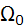 ∪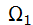 ∪ 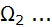∪ 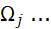 ∪ 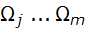
alt kümelerinden oluşur, bunlar önermelerin alacağı değerler ve dilde uygulanacak işlemcileri eleman olarak alan kümelerdir.
Önermelerin alabilecekleri doğruluk değerleri, kümesinin elemanları olarak belirlenir:
= {0 , 1} (“Hayır” veya “Evet”), (üçüncü olasılığın gözardı edildiği sistemlerde) (“Tertium Non Datur”)
İşlemcilerinin mantıksal (doğruluk belirten) (truth functional) işlemciler olması ve doğruluk değerlerinin iki değer (0 ve 1) veya daha fazla değer ile açıklanır olması, mantık sistemlerinin iki değerli veya çok değerli mantıklar olarak tanımlanmasına yol açar.
İki değerli mantık sistemleri, matematik mantık sistemlerinde en çok kullanılan sistemlerdir. Bunun nedeni, iki değerli mantıkta, önermelerin doğruluk değerlerinin saptanmalarının daha kolay olmasının yanında, çok değerli mantık sistemlerinin formüllerinin doğruluk değerlerinin saptanması için gerekli işlemlerin, sonucun açıklanabileceği değer sayısına ve formülün içerdiği değişken sayısına bağlı olarak, giderek daha çok çaba gerektiren işlemler haline gelmesindendir. Örnek olarak, iki değerli mantıkta, p ve q şeklinde iki değişken içeren bir formülde değişkenlerin doğruluk değerlerine göre alabileceği 4 olasılık vardır. Bu olasılıklar {T,T} , {T,F} , {F,T} , {F,F} olasıklarıdır ve sayıları,
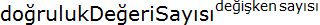 = olasılık sayısı
formülüne göre hesaplanırlar. iki doğruluk değerli, iki değişkenli bir sistem için bu sayı
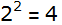
iken, 3 doğruluk değerli 2 değişkenli bir sistem için,
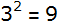
olasılık sayısının incelenmesi gerekir. Görüldüğü gibi, değişken sayısı arttıkça olasılık sayısı incelenmesi giderek güçleşen sayılara ulaşır. “Doğru” (T) (1), “Yanlış” (F) (0) den sonraki ilk verilebilecek değer “Belki” değeridir. İkiden çok değerli mantığın uygulandığı çok az sayıda matematik mantık sistemleri bulunmaktadır. Sıradışı bir mantık olan “Bulanık Mantık” (Fuzzy Logic) “Türk - İran” kültürel birlikteliğinin son büyük matematikçisi olan Azerbaycan kökenli Lütfü Aliaskerzade tarafından 20 inci yüzyılda ortaya konulmuştur. Bulanık mantıkta, doğruluk değerleri, 0 ile 1 arası sonsuz sayıda doğruluk değeri alabilmektedir. Bütün bunlar matematik mantık için sıradışı sistemlerdir.
Bu çalışma çerçevesinde, çok spesifik olmayan tüm matematik ve matematik mantık kitaplarında işlendiği gibi, iki değerli mantık üzerinde durulacaktır. İki değerli mantık sistemlerinin, günümüzde geçerli tüm matematiği açıklayabileceği ve ikiden fazla değerlikli mantık sistemlerinde formüllerin doğruluk değerlerinin değerlendirilmesinde çok artabilecek işlem sayısı, temel matematik mantık sistemlerinin genel olarak, en azından başlangıçta, sadece iki değerli mantık sistemlerinden oluşmasını, bir noktada zorunlu hale getirmiştir.
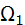 kümesi, olumsuzluk (değilleme) (¬) sembolünü içerir.
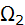 kümesi, diğer tüm tanımlı işlemcileri eleman olarak alır:
⊆ {∧ (ve) , ∨ (veya) , → (Eğer... ise) , ↔ (eşdeğerdir)}
Ω kümesinin tüm işlemcileri , doğruluk değeri işlevli (truth functional) işlemcilerdir(operators). Bunun anlamı bu işlemcilerin işlenenleri (operands) mantıksal değerler (iki değerli mantıkta 1 veya 0) , verdikleri sonuç da mantıksal bir değerdir (yine 1 veya 0).
Bir p önermesinin değeri T (1) ise, değillemesi olan ¬p önerme formülünün değeri F (0) dır.
Birleşme (conjunction) iki işlenenli ∧ (ve) işlemcisi etrafında oluşur. Birleşmenin doğruluk değeri, eğer ve sadece eğer iki işlenenin değerlerinin birlite “Doğru” (T) olması koşulu ile doğrudur.
Ayrışma (disjunction) iki işlenenli ∨ (veya) işlemcisi etrafında oluşur. Önermeler mantığında, mantıksal veya işlemcisi, “Dışlamayan Veya” tipindedir. Ayrışmanın doğruluk değeri, eğer ve sadece eğer iki işlenenin birden değerlerinin “Yanlış” (F) olması koşulu ile yanlış olabilir.
Eğer... ise işlemcisi → iki işleneneli bir mantıksal işlemcidir ve doğruluk değeri sadece ardılın (q) değeri “Yanlış” (F) olması durumunda yanlış olmaktadır.
Eğer ve sadece eğer (eşdeğerlik), işlemcisi ↔ ile bağlanmış önermelerin doğruluk değerleri, eğer ve sadece eğer koşulun ve ardılın değerlerinin aynı olduğu durumlarda “Doğru” (T) olabilir.
Zeta kümesi (Z), örneklerde uygulanması “Bilgilenme” (Inference) kuralları olarak tanımlanan, formüllerin dönüşüm kurallarıdır.
Iota kümesi (I), eleman olarak aksiyomları alan bir kümedir.
Önermeler mantığı dili L iyi oluşmuş formüller (wff) kümesidir. Burada,
Temel : Alfa kümesinin her elemanı (p , q , r , s , t ...) bir formüldür.
Eğer 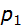 , 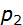 ,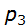 ,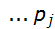 birer formülse ve eğer f, 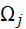kümesinin bir elemanı ise (yani işlemcisi bu dilde tanımlı bir işlemci ise) f( , , ,) de bir formüldür. (En basit örnek olarak, eğer p bir formülse ¬p de bir formüldür).
Kapalı Sistem: Başka hiçbir şey formül değildir.
Önermeler mantığı, işlemciler etrafında kapalı bir sistemdir. Yani p bir formülse ¬p de bir formüldür. Kapalılık, bileşik formüllerin oluşturulmasını da tanımlar. Önermeler mantığının dilbilgisi (sözdizimi) (sentaks) kurallarına göre oluşturulan ve doğruluk değeri tartışmasız bir şekilde saptanabilen formüller, iyi oluşmuş formüller olabilir. Örnek olarak p ∧ q, iyi oluşmuş bir formül iken, p ∧ q ∧ r iyi oluşmuş bir formül değildir. Gerçi sonuçta doğruluk değeri değişmez, ama bu formülde hangi değişkenin, hangi değişkenle birleştiği belli değildir. İyi oluşmuş bir formül (p ∧ q) ∧ r gibi, açıkça birleşmeyi belirten formüller olmalıdır.
Gödel’in tamamlık kuramına göre,
Önermeler ve yüklemler mantıkları tam ve tutarlıdır fakat yeterli değildir. Yani, bu mantık çerçevesinde tanımlanan tüm formüller, aynı dil içinden kanıtlanabilir. Fakat, tüm matematiğin bu mantık çerçevesinde kanıtlanmasının olanağı yoktur.
Gödel’in tamamlık kuramına göre, bir dil tamam ise yeterli değildir, yeterli ise tamam değildir. Böylece hiçbir yeterince gelişmiş (yeterli) sistemin kurallarının tümünün doğruluğunu, bu sistemin kendisi içinden belirleme olanağı yoktur. Bazı formüllerin sonucu “karar verilemez” olarak kalacaktır. Bu yüzden, matematiğin tümü, salt formalistik yaklaşımlarla açıklanamaz.
Gödel’in kuramı tüm matematğin salt formalistik yaklaşımlarla açıklanamayacağı üzerinedir. Oysa, yaşanan dünya üzerinde geçerli matematiğin tümüne yakını sıfırıncı ve en çok birinci derece mantıklarla, yani önermeler ve tek özelliği gözönüne alan yüklemler mantığı ile açıklanabilir. Bu açıklamalar, özellikle üzerinde hiçbirşey bilmediğimiz sonsuzluğu içeren tanımlarda çelişkilerle yetersiz kalmaktadır. Fakat bu yetersizlikler, tüm matematği geçersiz kılacak kadar fazla değildir. Yani, matematik teoremlerinin fiziksel dünyada uygulanmasında hiçbir sorun ve sakınca yoktur. Bu nedenle, matematik, 20 inci yüzyılın en büyük teknolojik gelişmesi olarak nitelendirilmektedir.
1.3.2 - Doğal Tümdengelimin Matematiksel Tanımı
Doğal tümdengelim (natural deduction), Önermeler mantığının uygulama alanıdır.
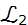 = L(A , Ω , Ζ , Ι)
A ve Ω kümeleri aynıdır. Z kümesi ise, doğal tümdengelimi desteklemek için, on bilgilenme kuralına dayanır. Bunlardan ilk dokuzu, bilinen formüllerden (wff) bilinmeyenlerin çıkarımı için düzenlenmiştir. Onuncusu sanal bir düzenlemedir ve deneme ile yeni kural oluşturulup oluşturulamadığının belirlenmesi amacı ile uygulanır. Bu kuralları kısa süre sonra inceleyeceğiz.
Sonuç çıkarımı için, daha önce de kullandığımız, çizgisel bilgilenme |- (demek ki) sembolünü inceleyeceğiz. Bu sembol Γ |- ψ (Gamma demek ki psi) şeklinde okunur. Γ bazen bir boş küme Ø, bazen tek bir önermeden oluşan bir küme, bazen de birkaç önermeden oluşup dönüşüm kuralları ile tek bir elemana indirgenebilien bir kümedir. Γ kümesi bir boş küme olduğunda, kullanılmaz ve |- ψ şeklinde kullanılır.
Iota kümesi, tüm önermeler mantığı uygulamalarında boş kümeye eşittir (I=Ø). Yani, önermeler ve yüklemler mantığında, hiç aksiyom yoktur.
Önermeler mantığında, açıkta belirtilmiş hiçbir aksiyom olmamasına karşın, bağlaçların değerlendirilme yöntemleri, değişmez bir şekilde dilin tanımına konulmuştur. Bu durumda, önermeler mantığında kullanılacak işlemci sayısı ve bu işlemcilerinin değerlendirilme yöntemleri, bir tür belirtilmemiş aksiyom sayılır.
Önermeler mantığında beş bağlaç birbirinden bağımsız değildir ve tüm bağlaçlar bir tanesi türünden belirtilebilir. Bu olanak, çok sayıda eşdeğer bileşik önerme ifadesi ortaya çıkarabilir. Fakat, bu formüller eşdeğer olduklarından ve önermeler mantığı sistemi de tutarlı bir sistem olduğundan, tüm eşdeğer formüllerin doğruluk değerleri aynıdır.
Önermeler mantığında, beş bağlaç ile sonsuz sayıda iyi oluşmuş formül oluşturup doğruluk değerlerinin bilgisayarla saptanması olanağı vardır. Buna rağmen, bu bir spor değildir. Öncelikle kullanılan yöntem üzerinde deneyim kazanılarak doğru sonuçların elde edilmesi sağlanmalı ve ancak gereksinme olan ve bir amaç için kullanılacak formüller üzerinde yoğunlaşılmalıdır.
Tüm bu çalışmaları yaparak, önermeler mantığının çalışma yöntemlerini, dönüşüm kurallarını, matematik kanıtlarda kullanılmasını incelemeye başlıyoruz.
Matematik sembolik düzeyde gerçekleştirilen bir akıl yürütme yöntemidir. Ancak örneklerle fiziksel ortama çıkar. Mantematik mantık da aynen bu şekilde sembolik olarak uygulanır ve formülleri çıkarılır. Ancak uygulama örneklerinde (Java sınıf örnekleri gibi) fomüllerden fiziksel yapılanmalar ortaya çıkar. Örnek olarak, matematik mantık için iki önermenin birleşimi, p Λ q olarak tanımlanır. Bu tek formülden, Ahmet Λ Mehmet, Hasan Λ Hüseyin gibi sayısız örnek oluşturulabilir.
İlk olarak işlemcilerin anlamları ve işlemciler (Bağlaçlar) ile birbirine bağlanmış bileşik önermelerin doğruluk değerlerinin (“Doğru” veya “Yanlış”) olarak belirlenmelerinin yöntemlerini inceleyeceğiz.
Bir önerme formülünün (mantıksal form), iyi oluşmuş bir formül olarak düzenlenmesi için, belirsiz ifadeler içermemeli ve formülün yazımından, doğruluk değeri kuşkuya yer vermeyecek şekilde hesaplanabilmektedir. İyi oluşmuş formüllerin yazımı için, sıfır ve birinci düzey mantıklarda (önermeler ve yüklemler mantığında) tanımlı işlemcilerin öncelik sıralarının bilinmesi gereklidir. Öncelik sıraları aşağıdaki tabloda görülmektedir.
Mantıksal İşlemcilerin Öncelik Sıraları
İşlemci
Anlamı
Öncelik Sırası
¬
Değil
1
∧
Ve
2
∨
Veya
3
→
Eğer ... ise
4
↔
Eşdeğer
5
Bir önerme formülü, belirsizlik olabileceği kaygısı ile gereğinden fazla parantezle belirtilmiş olabilir. Doğruluk değerlerinin saptanması için Wolfram Alfa sitesi kullanıldığında, girilen önerme formülü düzenlenerek, öncelik sıralarının gözününe alındığı, belirsizliklere yer vermeyecek, fakat gereksiz parantez de içermeyecek, bir iyi oluşmuş formül (wff) önerisi belirtilecektir.
Bir önermenin doğruluk değerlerinin belirlenmesi için, çoğunlukla bilgisayar programları kullanacağımızdan, (0) (“Yanlış”) için (F) sembolünü , (1) (“Doğru”) için (T) sembolünü kullanacağız. T sembolü (“True”), F sembolü (“False”) sözcüklerinin ilk harfleridir.
1.3.3 - Doğruluk Değerlerinin Bulunması
Bir mantık sisteminde doğruluk değerlerinin saptanabilmesi, mantık sisteminin değişkenlerinin alabilecekleri doğruluk değeri sayısına ve tanımlı bağlaçlardan yararlanılarak iyi oluşmuş formüllerin oluşturulma yöntemlerine (sözdizimi) (sentaks) ve iyi oluşmuş formüllerin doğruluk değerlerin nasıl saptanacağı bilgisine (içerik) (semantik) bilgilerine gereksinme duyulur.
Önermeler mantığı mantığı (sıfırıncı düzey mantık) ve yüklemler mantığı (birinci düzey mantık) için geçerli sözdizimi ve sözyazımı kuralları 1.3.1 de açıklanmıştır. Gerek önermeler, gerekse yüklemler mantığı iki değerli mantıklar sınıfındadır. Yani, önerme değişkenleri kümesi, sonlu bir küme olup gerektiği kadar eleman içerir {p , q , r , s, t ...) genellikle en çok üç değişkene kadar formüller oluşturulur. Bu elemanların alabileceleri doğruluk değerleri, iki değerlikli mantık sistemleri için sadece iki tanedir {0,1} {Doğru,Yanlış} İngilizcesi {True,False} genellikle doğruluk değerleri T (true) ve False (F) gibi tek harflerle gösterilir {T,F}.
Mantık formüllerinin bir form (formül) olduğunu ve sadece bir temel şablon olduğu unutulmamalıdır. Bu bir Java sınıfı niteliğindedir. Gerçek dünya uygulamaları, bu sınıfın (formülün) örneklerinin oluşturulması ile yapılır. Bir sınıf tanımından ( örnek olarak: p ∧ q) formülünden, sonsuz sayıda örnek yaratılabiir (Ahmet ∧ Mehmet, Hasan ∧ Hüseyin, Cam ∧ Ahşap vb...)
İki değerli mantık sistemlerinde değişken sayısı n oldukça, formüle giren değişkenlerin doğruluk değerlerinin 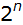 olasılık sayısı olabileceği bilinmektedir. İki değişkenli bir önermeler mantığı formülünde, bu olasılık sayısı =4 olup, doğruluk tablosu 4 satırdan oluşacaktır. Doğruluk tablosunun sütün sayısı istendiği kadar olabilir.
Sütün sayısı, doğruluk tablosunun el ile veya bilgisayar yardımı ile yapılması yöntemlşerinde değişik olabilir. Bilgisayar ile doğruluk tablosunun oluşturulması, programa göre çoğunlıkla sadece değişkenlerin mantıksal değerleri ve sonuç sütunundan oluşur. Bilgidayar ile çalışırken, ara kademe sütunlarına gereksinme olmaz, çünkü bilgisayar bunları iç belleğinde tutar ve sadece sonucu açıklar. Oysa bilgisayar kullanmadan doğruluk tablosu hesaplarken, yanılgıların önlenmesi için, gerekli tüm ara işlemler için bir sütun açılabilir. Burada p ve q nün doğruluk değerleri birer sütun, bileşimin doğruluk değeri ise ayrı bir sütuna gerek gösterdiğinden, doğruluk tablosu en az 4 satır ve 3 sütundan oluşacaktır. Doğruluk tablolarının el emeği ile oluşturulması, karmaşık bileşik önermeler için çok zahmetli olabilir ve hiç gerekli değildir. Bunun için bilgisayar kullanımı ile çok kısa yoldan ve en doğru sonuç alınabilmektedir. Dört satırdan oluşan ve az sütunlu olan doğruluk tabloları ise, bilgisayar kullanımına gerek olmadan el ile kolaylıkla doldurulabilir.
İyi oluşmuş bir formülün doğruluk değeri,
Değişkenlerin değerlerinin teker incelenmesi ile,
Doğruluk tabloları ile,
Analitik “Tablaux” (okunuşu: tablo, fr) yöntemi ile bulunabilir.
Bir formülün doğruluk değerinin formüldeki her değişkenin doğruluk değerinin değiştirilerek incelenmesi, özellikle büyük ve çok sütunlu tabolarda, el ile yapılmak istendiğinde çok zaman alabilir ve hatalara neden olabilir. Bu nedenle artık çağdışı (deprecated) bir yöntemdir. Bunun yerine bu metodun toplu halde uygulanması olan “Doğruluk Tabloları” yöntemini kullanacağız. Günümüzde doğruluk tabloları, bilgisayar kullanımı ile kolayca ve hatasız olarak uygulanabilmektedir. Biz de çalışmalarımızda, doğruluk tablolarını bilgisayar kullanımı ile oluşturacağız.
Analitik “Tablaux” (okunuşu: tablo, fr) yöntemi, kullandığımız sıfır ve birinci derece mantıklar için aşırı kuramsal ve gereksizdir. Bu yüzden çalışmalarımızda bu yöntemi kullanmayacağız.
Doğruluk değerlerinin hesaplanması için, online olarak Wolfram Alfa (Mathematica), Sage ve http://logik.phl.univie.ac.at/~chris/gateway/formular-uk-zentral.html adresinde bulunan programı kullanacağız. Bu programın kullanılışı son derece basittir ve http://logik.phl.univie.ac.at/~chris/gateway/server-languagehelp.html adresinde kullanım kılavuzu bulunmaktadır. Başka çevrimiçi araçlar da bulunmasına rağmen, bu araç her türlü doğruluk tablosu çalışması için yeterlidir. Internet gereksinmesi olmayan bir program, http://davidwees.com/javascript/logic/ adresinden indirilebilir. Bu program en çok üç mantıksal değişken için doğruluk tablolarını kolayca oluşturabilir. Aslında, bu gibi bir kısıtlamaları olmayan Wolfram Alfa, Sage ve Chris Gothsall sitesinden yararlanılması gidilecek en doğru yoldur.
İlk doğruluk tablomuzu, v (ve) bağlacı ile birbirine bağlanmış, iki önermeden (bileşenler) oluşan bir bileşik önermenin doğruluk tablosunun oluşturulması ile gerçekleştireceğiz. Bir önceki 1.3.1 konusunda, iki bileşenli (diyadik) ∧ işlemcisi ile bağlanmış olan bir bileşik önermenin doğruluk değerinin, sadece ve yanlız sadece (sys) her iki işleneninin (bileşenin) doğruluk değerlerinin, “Doğru” (T) olması ile “Doğru” (T) olabileceğini, diğer tüm olasılıklarda “Yanlış” (F) olacağı belirtilmişti. Böylece, doğruluk tablosunun oluşturulması için yeterli bilgi elde edilmiş olduğundan, sadece dört satır 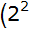 = 4) dan oluşacak p ∧ q birleşiminin doğruluk tablosunun oluşturulmasını, bilgisayar kullanımına gerek olmadan el ile oluşturabiliriz. Bu doğruluk tablosunun Wolfram Alfa sitesinden yararlanılarak oluşturulması, Mathworld uygulama sayfamızda açıklanmıştır.
p ve q nün birleşiminin doğruluk tablosunun oluşturulması sonucu,
Birleşimin Doğruluk Tablosu
| p | q | p∧ q |
| T | T | T |
| T | F | F |
| F | T | F |
| F | F | F |
elde edilir.
Bu tablonun oluşumunu satır satır inceleyelim. Her iki değişkenin değerlerin T ve T olduğu durum, her iki bileşenin doğru olduğu ve ∧ (ve) bağlacı ile birleşmenin doğruluk değerinin “Doğru” (T) olduğu tek durumdur ve doğruluk tablosunda, bileşen sütununda T değeri konulmuştur. Diğer bütün durumlarda, birleşmenin doğruluk değeri “Yanlış” (F) dir ve bu değer, doğruluk tablosunda, birleşimin doğruluk değeri sütununa konulmuştur.
İkinci örneğimiz, ayrışma (disjunction)‘nun, ∨ (veya) (latince “vii” Türkçe “veya”) bağlacı ile belirtilen formunun doğruluk tablosunun oluşturulması olacaktır. Ayrışma bağlacı, iki işlenenli (diyadik) bir işlemcidir. Ayrışma bağlacı ile birbirine bağlanmış iki basit önermeden oluşan bileşik önermenin doğruluk değerlerinin, her iki işlenenin doğruluk değerlerine bağlı olarak saptanabilmesi için, ayrışma bağlacının tanımlı semantiğinden yararlanılacaktır. Bir önceki 1.3.1 konusunda, bu bilgi, ayrışmanın doğruluk değerinin sadece her iki bileşenin doğruluk değerinin “Yanlış” (F) olacağı durumda “Yanlış” (F) olacağını, diğer tüm durumlarda “Doğru” (T) olacağı açıklanmaktadır. Matematikte kullanılan ayrışma işlemcisi ∨ nin “Dışlamayan veya” olarak kullanıldığını, bu yüzden her iki ayrışan (disjunct) doğruluk değerinin “Doğru” (T) olması durumunda, ayrışmanın doğruluk değerinin, “Doğru” (T) olacağı her zaman gözönüne alınmalıdır. Bu bilgilerle el ile kolaylıkla oluşturulabilecek, ayrışma bağlacı ile birbirine bağlanmış, iki basit önermeden oluşuşan ayrışma bileşik önermesinin doğruluk tablosu, aşağıda görülmektedir. Aynı tablonun Wolfram Alfa sitesinden yararlanılarak oluşturulması, Mathworld uygulama sayfamızda açıklanmıştır.
Ayrışmanın Doğruluk Tablosu
| p | q | p V q |
| T | T | T |
| T | F | T |
| F | T | T |
| F | F | F |
Yukarıdaki doğruluk tablosundan, ayrışmanın doğrulanmadığı tek durumun her iki ayrışanın da doğrulanmadığı en son satırdaki durumdur.
Bundan sonra, inceleyeceğimiz doğruluk tablosu, → (eğer...ise) bağlacı ile belirtilen “tek yönlü koşullu önerme” nin doğruluk tablosunun oluşturulması olacaktır. Tek yönlü koşullu önerme (yeterlilik) (gereklilik) (implification) önermesi, iki işlenenli (diyadik) → (eğer ... ise) işlemcisi ile bağlanmış iki basit önermeden oluşan birleşik önerme olarak tanımlanır. Tek yönlü koşullu önerme formu p → q olarak belirtilebilir. Burada p terimine “Koşul”, q terimine “Ardıl” adı verilir. Koşul ve ardıl birbirleri ile neden ve sonuç ilişkisi içinde değilerdir. Bu işlemcinin de gerçek dilde belirtilen koşul ile ilişkisi yoktur ve adına “Materyel Koşul” denilmiştir. Bu konuda biraz sonra daha geniş bilgi sahibi olacacağız. Bu form yapısında sonsuz sayıda örnek yapılabilir. Bu bağlacın yukarıda verilmiş olan tanımında belirtilmiş olan doğruluk değerleri, doğruluk tablosu oluşturularak daha akılda kalacak hale getirilecektir. Bu tablo ister elle, istenirse Mathworld uygulama sayfamızda açıklanmış olduğu şekilde, Wolfram Alfa sitesinden yararlanılarak oluşturulabilir.
Eğer...İse Bağlacı Doğruluk Tablosu
| p | q | p → q |
| T | T | T |
| T | F | F |
| F | T | T |
| F | F | T |
Tek yönlü koşullu önermenin, sadece ardılının “Yanlış” (F) olduğu durumda “Yanlış” (F) olduğuna dikkat edilmesi gerekir. Ardıl terimi “Doğru” (T) olduğunda, materyel koşul önermesinin doğruluk değeri, koşulun doğrulanmasına bakılmaksızın daima “Doğru” (T) olacaktır. Bu konunun daha geniş açıklamasını, işlemcilerinin semantiğinin incelenmesi sırasında yapacağız.
Bundan sonraki doğruluk tablosu eşdeğerlik bağlacı ↔ ile bağlanan iki mantıksal değişkenin doğruluk değerlerinin belirtildiği, “eşdeğerlik” ve “iki yönlü koşullu önerme” nin doğruluk tablosunun bu bağlacın 1.3.1 deki tanımına göre oluşturulması olacaktır. Burada eşdeğerlik önermesinin doğruluk değerinin, sadece ve yanlız sadece koşlun ve ardılın doğruluk değerleri aynı olduğunda “Doğru” (T) olacağı belirtilmişti.Bu tablo da aynı diğerleri gibi tanımından hareketle, ister elle istenirse, Mathworld uygulama sayfamızda açıklanmış olduğu gibi Wolfram Alfa sitesinden yararlanılarak oluşturulabilir.
Çift Yönlü Koşullu Önermenin (Eşdeğerliğin) Doğruluk Tablosu
| p | q | p ↔ q |
| T | T | T |
| T | F | F |
| F | T | F |
| F | F | T |
Bir önerme diğerine ancak ve ancak toğruluk tabloları eşit olduğunda eşit (eşdeğer) olur. Önermeler mantığında, tüm bağlaçlar birbiribirinden bağımsız değildir ve hepsi tek bir bağlaç cinsinden ifade edilebilir. Bu olgu da birçok eşdeğer önerme oluşturur.
Eşdeğerliğin doğruluk tablosuna bakılınca, bir p önermesinin bir q önermesine eğer ve sadece eğer, doğruluk değerleri aynı olduğu zaman eşdeğer olabilecekleri görülmektedir. Bu da doğruluk tabloları aynı olan önermelerin eşdeğer önermeler olabileceklerini açıklar, çünkü doğruluk tabloları eşit olduğunda, her olasılıkta her iki önermenin doğruluk değeri aynı olur. Bu da eşdeğerliğin oluşması için yeterli ve gerekli (sys) nedendir. Örnek,
¬p ∨ q önermesinin doğruluk tablosu, istendiğinde elle istendiğinde bilgisayar kullanımı ile oluşturulabilir.
¬p ∨ q önermesinin doğruluk tablosu
| p | q | ¬p v q |
| T | T | T |
| T | F | F |
| F | T | T |
| F | F | T |
Bu sonuçtan, ¬p ∨ q önermesinin doğruluk tablosunun, tek yönlü koşullu önerme, p → q ile aynı olduğu ve bu nedenle, her iki önermenin eşdeğer olduğu saptanır.
En son olarak, “değilleme” işlemcisi ¬ nin doğruluk tablosu açıklanacaktır.
Değilleme Önermesinin Doğruluk Tablosu
p
¬p
T
F
F
T
Bu incelemeden görüldüğü gibi, doğruluk tablolarının oluşturulmasında, mutlaka bilgisayara gerek yoktur. Küçük ve basit tablolar elle de oluşturulabilir. Bilgisayar kullanımı, giderek genişleyen ve birden çok bağlaç ve ikiden çok değişken içeren formüllerin doğruluk değerlerinin hesaplanması için çok kullanışlı olmaktadır.
Doğruluk tablolarının oluşturulmasında, önermeler mantığı dilinin tanımında belirtilen doğruluk değerleri kullanılmaktdır. Doğruluk değerlerinin belirtilmesinde, dilin oluşumunda tanımlanmış ve herkes tarafından kabul edilmiş mantıksal değerler kullanılmıştır.
1.3.4 - Eşit Önermeler
Eğer iki önermenin mantıksal değişkenlerinin her değeri için doğruluk değerleri aynı ise (yani doğruluk tabloları aynı ise) iki önerme birbirine eşit (eşdeğer) önermelerdir. Örnek,
p → q ile ¬ p ∨ q önermelerininin doğruluk tablolarını karşılaştırınız.
Tek Yönlü Koşullu Önermenin Doğruluk Tablosu ¬ p ∨ q Önermesinin Doğruluk Tablosu
p
q
p→ q
T
T
T
T
F
F
F
T
T
F
F
T
p
q
¬p∨q
T
T
T
T
F
F
F
T
T
F
F
T
Görüldüğü gibi bu iki önermenin doğruluk tabloları aynı çıkmaktadır. Bu durumda, bu iki önerme birbirinin eşiti (eşdeğeridir).
1.3.5 - Totoloji
Eşdeğerliği sınanan iki önerme, birleri ile gerçekten eşdeğer iseler, doğruluk tablosunun her satırı hep doğru çıkar. Yukarıdaki iki önermenin eşdeğerliğini sınayalım:
(p → q) ↔ ¬ p ∨ q Önermesinin Doğruluk Tablosu
| p | q | p→q↔¬p∨q |
| T | T | T |
| T | F | T |
| F | T | T |
| F | F | T |
Bu tablonun tüm satırları doğrudur (hep doğru). Böyle her satırı doğru önermelere (hep doğru) veya “Totoloji” adı verilir. Önerme yazılırken öncelik sıraları gözönüne alınır. Burada önce parantez içi değerlendirilir. Sonra, en yüksek öncelik sırası olan ¬ (değil) işlemcisinin tek işleneni olan p nin değeri değiştirilir, sonra ikinci öncelikteki ∨ (veya) işlemcisi değerlendirilir. En sonunda, en düşük öncelik değerli ↔ eşdeğerlik işlemcisi değerlendirilerek önermenin doğruluk değeri saptanır. Eğer parantez kullanılmamış olsaydı, sadece q nün eşdeğerlik ilişkisi içinde olduğu düşünülecek ve bu bir belirsizilik yaratacaktı. Belirsizlik yaratacak her formül gibi bu da bir “iyi oluşmuş formül” (wff) olmayacak ve geçersiz olacaktı. Parantez konulunca, herşey düzgün olarak çalışmıştır.
Bir totolojide, önermelerden birisi teorem (kanıtlanmış önerme) ise totologu da teoremdir.
1.3.6 - Çelişki
Eşdeğerliği sınanan iki önerme, birbirleri ile gerçekten eşdeğer değil iseler, doğruluk tablosunun her satırı hep yanlış çıkar. Yukarıdaki iki önermenin eşdeğerliğini sınayalım:
(p → q) ↔ ¬ p ∨ q Önermesinin Doğruluk Tablosu
| p | q | p→q↔¬p∨q |
| T | T | F |
| T | F | F |
| F | T | F |
| F | F | F |
Bu tablonun tüm satırları hep yanlıştır. Böyle her satırı yanlış önermelere “Çelişki” adı verilir. Önerme yazılırken öncelik sıraları gözönüne alınır. Burada önce parantez içi değerlendirilir. Sonra, en yüksek öncelik sırası olan ¬ (değil) işlemcisinin tek işleneni olan p nin değeri değerlendirilir, sonra ikinci öncelikteki ∨ (veya) işlemcisi değerlendirilir. En sonunda, en düşük öncelik değerli ↔ eşdeğerlik işlemcisi değerlendirilerek önermenin doğruluk değeri saptanır. Eğer parantez kullanılmamış olsaydı, sadece q nün eşdeğerlik ilişkisi içinde olduğu düşünülecek ve bu bir belirsizilik yaratacaktı. Belirsizlik yaratacak her formül gibi bu da bir “iyi oluşmuş formül” (wff) olmayacak ve geçersiz olacaktı. Parantez konulunca, herşey düzgün olarak çalışmıştır.
Bir totolojide, önermelerden birisi teorem (kanıtlanmış önerme) ise totologu da teoremdir.
1.3.7 - Sürdürülebilirlik
Bir önermenin mantıksal değeri, doğruluk tablosunda, bazen yanlış bazen de doğru çıkıyorsa, o önerme “Sürdürülebilir” (Contingent) (Bazen Doğru) bir önermedir. Örnek olarak,
(p → q) ↔ ¬ p ∨ q Önermesinin Doğruluk Tablosu
| p | q | p→q↔¬p∨q |
| T | T | T |
| T | F | T |
| F | T | T |
| F | F | T |
Bu tablonun tüm satırları doğrudur (hep doğru). Böyle her satırı doğru önermelere (hep doğru) veya “Totoloji” adı verilir. Önerme yazılırken öncelik sıraları gözönüne alınır. Burada önce parantez içi değerlendirilir. Sonra, en yüksek öncelik sırası olan ¬ (değil) işlemcisinin tek işleneni olan p nin değeri değiştirilir, sonra ikinci öncelikteki ∨ (veya) işlemcisi değerlendirilir. En sonunda, en düşük öncelik değerli ↔ eşdeğerlik işlemcisi değerlendirilerek önermenin doğruluk değeri saptanır. Eğer parantez kullanılmamış olsaydı, sadece q nün eşdeğerlik ilişkisi içinde olduğu düşünülecek ve bu bir belirsizilik yaratacaktı. Belirsizlik yaratacak her formül gibi bu da bir “iyi oluşmuş formül” (wff) olmayacak ve geçersiz olacaktı. Parantez konulunca, herşey düzgün olarak çalışmıştır.
Bir totolojide, önermelerden birisi teorem (kanıtlanmış önerme) ise totologu da teoremdir.
1.3.8 - Birleşme Etrafında Normal Form
Önermeler mantığında, önerme formları bağımsız değildir ve bir işlemci, diğerlerleri türünden ifade edilebilir. Birleşma etrafında normal form, bir formülün, ana bağlaç birleşme (∧) etrafında yeniden düzenlenmesidir. Bunu Chris Gothsall sitesinden yararlanarak düzenleyeceğiz.
(p → ((q → r) ∧ (¬ s ∨ r))) önermesinin doğruluk tablosunu, Chris Gotthschall sitesinden yararlanarak saptayalım. Bu önerme formülünü (mantıksal form) Chris Gotthschall sitesine aşağıdaki notasyonla gireceğiz.
(P -> ((Q -> R) & (~S v R)))
Doğruluk tablosu,
P Q R S | P -> ((Q -> R) & (~S v R))
---------+----------------------------
1 1 1 1 | *1 1 1 0 1
1 1 1 0 | *1 1 1 1 1
1 1 0 1 | *0 0 0 0 0
1 1 0 0 | *0 0 0 1 1
1 0 1 1 | *1 1 1 0 1
1 0 1 0 | *1 1 1 1 1
1 0 0 1 | *0 1 0 0 0
1 0 0 0 | *1 1 1 1 1
0 1 1 1 | *1 1 1 0 1
0 1 1 0 | *1 1 1 1 1
0 1 0 1 | *1 0 0 0 0
0 1 0 0 | *1 0 0 1 1
0 0 1 1 | *1 1 1 0 1
0 0 1 0 | *1 1 1 1 1
0 0 0 1 | *1 1 0 0 0
0 0 0 0 | *1 1 1 1 1
Bu pek alışılagelmiş olmayan doğruluk tablosui iyi okunduğunda elle doldurmaya en yatkın düzenlemeyi vernektedir. Önerme doğruluk değeri, * ile belirtilmiş sütun olmaktadır.
Şimdi aynı siteden, aynı önermenin birleşme etrafında normal formunu (Conjuctive Normal Form (CNF) oluşturalım.
(~Q v R v ~P) & (~S v R v ~P)
CNF nin doğruluk tablosunu aynı siteden oluşturalım ve orijinal önerme ile karşılaştıralım.
p
q
r
s
Original
CNF
T
T
T
T
T
T
T
T
T
F
T
T
T
T
F
T
F
F
T
T
F
F
F
F
T
F
T
T
T
T
T
F
T
F
T
T
T
F
F
T
F
F
T
F
F
F
T
T
F
T
T
T
T
T
F
T
T
F
T
T
F
T
F
T
T
T
F
T
F
F
T
T
F
F
T
T
T
T
F
F
T
F
T
T
F
F
F
T
T
T
F
F
F
F
T
T
Tablodan görüldüğü gibi, orjinal ile CNF düzenlmesinin doğruluk tablosu aynı olmaktadır. Bu durumda, orijinal önerme ile CNF düzenlemesi birbirine eşdeğer önermelerdir.
Bu iki önerme tablosu çok uzun oladuğundan eşdeğerliklerinin, bilgisayar yardımı ile belirlenmesinde büyük yarar bulunmaktadır. Bunun için, her iki önermenin eşdeğerliği sınanır ve sonuç totoloji olursa, her iki önermenin eşdeğerliği insan hatası olmadan saptanmış olur. Bu iki önermenin eşdeğer oldukları varsayımı,
(P -> ((Q -> R) & (~S v R))) <-> ((~Q v R v ~P) & (~S v R v ~P))
önermesinin doğruluk değerinin saptanması ile anlaşılır. Sonuç bir totoloji (hep doğru) olarak gerçekleştiğinden, orijinal önerme ve CNF nin eşdeğerliği, insan hatası olmadan saptanmış olur.
1.3.9 - Ayrışma Etrafında Normal Form
Bundan sonra önermeler mantığında uygulanan işlemcilerin içerik bilgilerini (semantik) incelemeye başlayacağız.
1.3.10 - Ve (And) Bağlacı (∧)
Basit önermeler, ve gibi bağlaçlarla bağlanarak bileşik önermeler haline getirilebilirler. Bağlaçlar çift işlenenli (operand) işlemcilerdir (operator). Burada inceleyeceğimiz “ve” bağlacı en basit önerme bağlacıdır ve matematik olarak “∧” veya “&” olarak belirtilir. genel olarak ters v (∧) şekli kullanılır.
Ve bağlacı ile bağlanan ve bu şekilde tek bir bileşik önerme haline gelmiş olan önermelerin, doğrulanabilmesi için her iki basit önermenin de ayrı ayrı doğru olmaları gerekir.
Örnek : p önerisi (sıcaklık 15 derece Celsius) , q önerisi (alarm çalıyor) olsun, p ∧ q ne zaman doğrulanır ?
Çözüm : Her öneride sadece “T” ve “F” olmak üzere iki doğruluk olasılığı ve bileşik önerme iki önermeden olşuğuna göre, bileşik önermenin doğruluğunu belirleme için 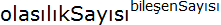 = 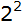 = 4 tane olasığın incelenmesi gerekmektedir. Bu konudaki doğruluk tablosu, yukarıda p ∧ q Doğruluk Tablosu olarak verilmiştir. Bu tablonun incelenmesinde, “ve” bağlacı ile bağlanmış basit önermelerden oluşan bileşik önerme, ancak tüm basit önermeler doğru ise doğrudur. Diğer tüm durumlarda yanlıştır.
Matematikte, “ve” bağıntısı çoğu zaman kısaltılmış hali ile belirtilir. Örnek olarak,
(x≤π) ∧ (x≥-3) yerine -3 ≤ x ≤ π yazılabilir. Burada x ‘in bir alt değer (-3) ve bir üst değer (π) arasında değerler alabileceği, alt ve üst değerlerin de, x’in alabileceği değerlere dahil olduğu belirtilmektedir. Bir başka örnek, (x<8) ∧ (x> -6) yerine -6 < x < 16 yazılabiir. Burada x’in -6 ile 8 arası değerler alabileceği (tanım aralığı) ve uç değerlerin bu değerlere dahil olmadığı belirtilmektedir.